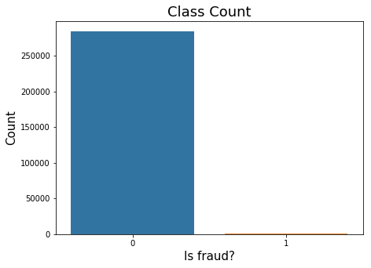
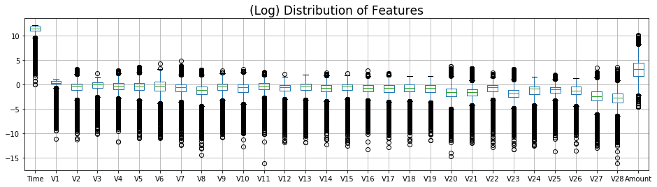
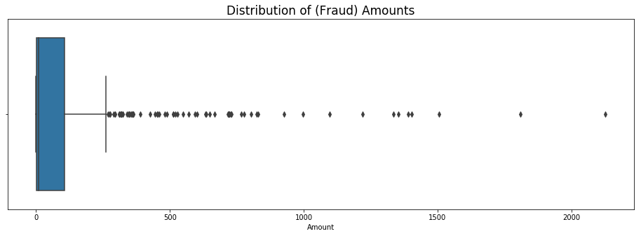
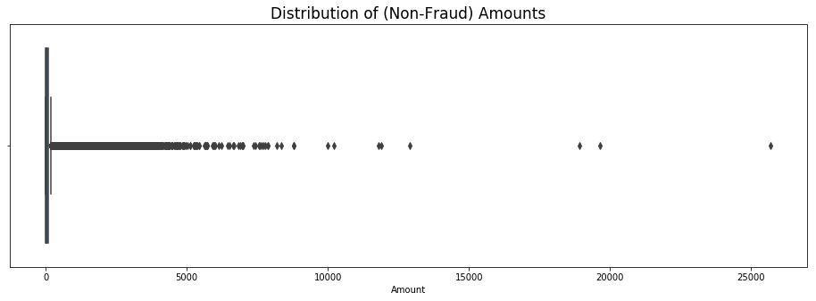
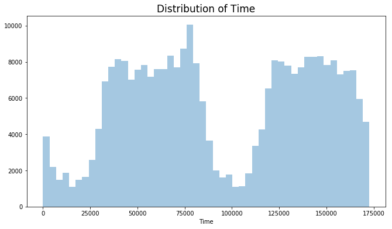
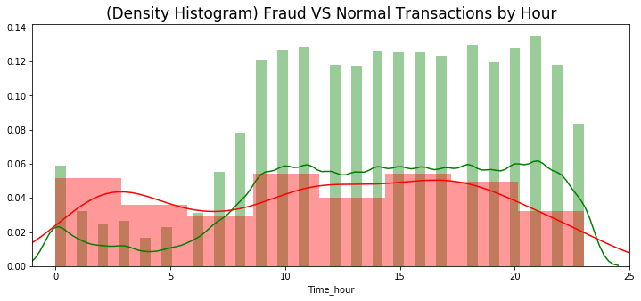
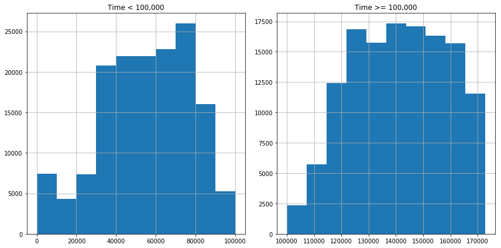
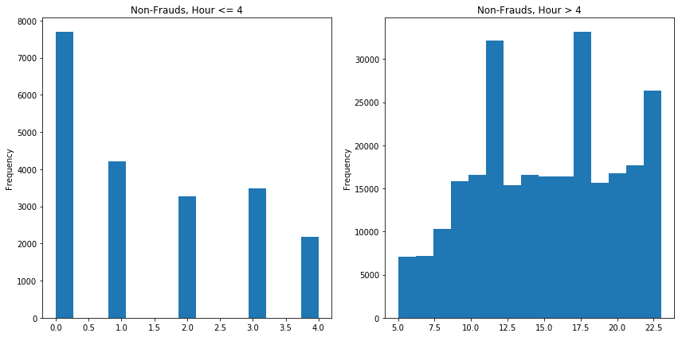
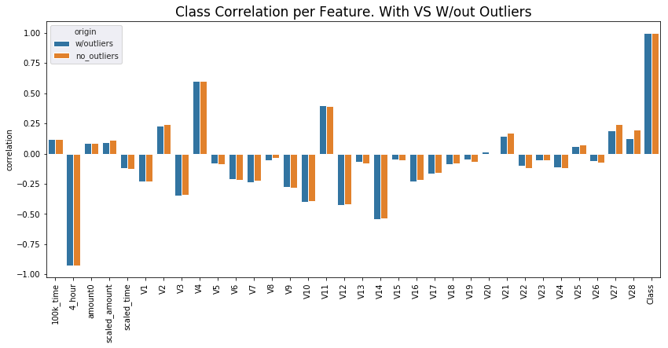
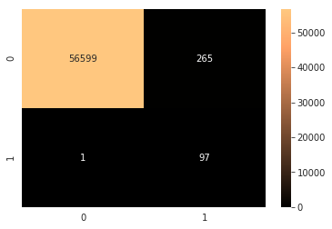

1. Introduction to DatasetPreview of Data2. Exploratory Data AnalysisChecking for Missing Data.Class ImbalanceVisualizing distributions. ‘Amount’ Distribution‘Time’ Distribution3. Modeling Outcome of InterestFeature EngineeringTime-Based FeaturesFeature: Time_hour > 4Feature: $0 Fraud Amounts...?Add the Rest: PCA and ClassData Processing (On the Training Data Only)Balancing ClassesRemoving High-Correlation OutliersApproach for Outlier RemovalFeature SelectionTest and Compare ClassifiersFirst-Run: Predictions on Default ParametersLogistic Regression- GridSearch & Recall Score.Pyrrhic Victory-Optimize Specificity, while Maintaining 100% RecallCustom Scoring FunctionLogistic Regression- OptimizedDecisionTreeClassifier- OptimizedSupport Vector Classifier- OptimizedKNeighborsClassifier- OptimizedImblearn’ BalancedRandomForest- OptimizedSKlearn’ RandomForestClassifier- Optimized4. Research Question5. Choosing ModelPerfect RecallBest Overall6. Practical Use for Audiences of Interest7. Weak Points & Shortcomings
1. Introduction to Dataset
From https://www.kaggle.com/mlg-ulb/creditcardfraud/home :
The datasets contains transactions made by credit cards in September 2013 by european cardholders. This dataset presents transactions that occurred in two days, where we have 492 frauds out of 284,807 transactions. The dataset is highly unbalanced, the positive class (frauds) account for 0.172% of all transactions.
PCA Features:
It contains only numerical input variables which are the result of a PCA transformation. Features V1, V2, ... V28 are the principal components obtained with PCA.
Time:
Feature ‘Time’ contains the seconds elapsed between each transaction and the first transaction in the dataset.
Amount:
The feature ‘Amount’ is the transaction Amount.
Class:
Feature ‘Class’ is the response variable and it takes value 1 in case of fraud and 0 otherwise.
Preview of Data
| Time | V1 | V2 | V3 | V4 | V5 | V6 | V7 | V8 | V9 | ... | V21 | V22 | V23 | V24 | V25 | V26 | V27 | V28 | Amount | Class | |
|---|---|---|---|---|---|---|---|---|---|---|---|---|---|---|---|---|---|---|---|---|---|
| 0 | 0.0 | -1.359807 | -0.072781 | 2.536347 | 1.378155 | -0.338321 | 0.462388 | 0.239599 | 0.098698 | 0.363787 | ... | -0.018307 | 0.277838 | -0.110474 | 0.066928 | 0.128539 | -0.189115 | 0.133558 | -0.021053 | 149.62 | 0 |
| 1 | 0.0 | 1.191857 | 0.266151 | 0.166480 | 0.448154 | 0.060018 | -0.082361 | -0.078803 | 0.085102 | -0.255425 | ... | -0.225775 | -0.638672 | 0.101288 | -0.339846 | 0.167170 | 0.125895 | -0.008983 | 0.014724 | 2.69 | 0 |
| 2 | 1.0 | -1.358354 | -1.340163 | 1.773209 | 0.379780 | -0.503198 | 1.800499 | 0.791461 | 0.247676 | -1.514654 | ... | 0.247998 | 0.771679 | 0.909412 | -0.689281 | -0.327642 | -0.139097 | -0.055353 | -0.059752 | 378.66 | 0 |
| 3 | 1.0 | -0.966272 | -0.185226 | 1.792993 | -0.863291 | -0.010309 | 1.247203 | 0.237609 | 0.377436 | -1.387024 | ... | -0.108300 | 0.005274 | -0.190321 | -1.175575 | 0.647376 | -0.221929 | 0.062723 | 0.061458 | 123.50 | 0 |
| 4 | 2.0 | -1.158233 | 0.877737 | 1.548718 | 0.403034 | -0.407193 | 0.095921 | 0.592941 | -0.270533 | 0.817739 | ... | -0.009431 | 0.798278 | -0.137458 | 0.141267 | -0.206010 | 0.502292 | 0.219422 | 0.215153 | 69.99 | 0 |
5 rows × 31 columns
2. Exploratory Data Analysis
Columns:
1Index(['Time', 'V1', 'V2', 'V3', 'V4', 'V5', 'V6', 'V7', 'V8', 'V9', 'V10',2'V11', 'V12', 'V13', 'V14', 'V15', 'V16', 'V17', 'V18', 'V19', 'V20',3'V21', 'V22', 'V23', 'V24', 'V25', 'V26', 'V27', 'V28', 'Amount',4'Class'],5dtype='object')
Data Shape:
xxxxxxxxxx11(284807, 31)
Checking for Missing Data.
- Fortunately, data integrity is perfect. All non-null, and no mixed types.
xxxxxxxxxx331Data columns (total 31 columns):2Time 284807 non-null float643V1 284807 non-null float644V2 284807 non-null float645V3 284807 non-null float646V4 284807 non-null float647V5 284807 non-null float648V6 284807 non-null float649V7 284807 non-null float6410V8 284807 non-null float6411V9 284807 non-null float6412V10 284807 non-null float6413V11 284807 non-null float6414V12 284807 non-null float6415V13 284807 non-null float6416V14 284807 non-null float6417V15 284807 non-null float6418V16 284807 non-null float6419V17 284807 non-null float6420V18 284807 non-null float6421V19 284807 non-null float6422V20 284807 non-null float6423V21 284807 non-null float6424V22 284807 non-null float6425V23 284807 non-null float6426V24 284807 non-null float6427V25 284807 non-null float6428V26 284807 non-null float6429V27 284807 non-null float6430V28 284807 non-null float6431Amount 284807 non-null float6432Class 284807 non-null int6433dtypes: float64(30), int64(1)
Class Imbalance
This is the most unique quality about this dataset. Most of the steps taken later will be about multiple ways of dealing with imbalanced data.
Distribuition of Normal(0) and Frauds(1): 0 284315 1 492
Non-Frauds 99.83 % of the dataset
Frauds 0.17 % of the dataset

Visualizing distributions.
- Features have different central tendencies and need to be normalized to make better sense of them.
- ‘Time’ is encoded in two days’ worth of seconds. We’ll need to transform it in order to visualize it properly.


- It’s clear that
TimeandAmountare in a different range compared to thePCAfeatures.
‘Amount’ Distribution
- ‘Amount’ isn’t normalized.
- There’s high concentrations of small-amount transactions. And many dispersed large-amount outliers, all the way up to $25,000
- 85% of data is below $140
- Top 1% of transaction amounts are between $1,017.97 and $25,691.16
- 80% of Frauds are less than: $152.34.


‘Time’ Distribution
- I’ll convert ‘Time’ to hours and minutes, which will allow for better visualization.
- ‘Time’ distribution (by second) shows two normal curves, which might reveal something meaningful for predicting purposes. This will be the basis for a time-based feature engineering.
Raw ‘Time’, by seconds:

Raw ‘Time’, colored by class: (green is non-frauds, red is frauds)

(Transformed) ‘Time’ in hour units, colored by class: (green is non-frauds, red is frauds)

3. Modeling Outcome of Interest
Feature Engineering
- Classification algorithms expect to receive normalized features. There are two features in the data that aren’t normalized. (‘Time’ and ‘Amount’)
- New features could be created from those unprocessed features, if they capture a pattern correlated to ‘Class’.
Time-Based Features
- There seem to be two normal distributions in the feature Time. Let’s isolate them so we can create features from them.

Feature: Time_hour > 4
- Feature for non-frauds, where ‘Time_hour’ is above 4. This seems to have a clear differentiation.

Feature: $0 Fraud Amounts...?
Many transactions are zero dollars. This might be confusing for our model’s predictive ability. It is arguable these don’t need to be prevented.
- One approach could be to simply discard these transactions.
- The second approach is to ignore it and focus on predicting transactions labeled as ‘frauds’, regardless of them having no dollar-value.
xxxxxxxxxx41Non-Fraud Zero dollar Transactions:217983Fraudulent Zero dollar Transactions:427For now, I’ll keep them.
Normalize Time and Amount
Although we already captured some features from ‘Time’ and ‘Amount’, I’d like to normalize and test them in the model.
Add the Rest: PCA and Class
Preview of data after feature engineering:
| 100k_time | 4_hour | amount0 | scaled_amount | scaled_time | V1 | V2 | V3 | V4 | V5 | ... | V20 | V21 | V22 | V23 | V24 | V25 | V26 | V27 | V28 | Class | |
|---|---|---|---|---|---|---|---|---|---|---|---|---|---|---|---|---|---|---|---|---|---|
| 0 | 1 | 0 | 0 | 1.783274 | -0.994983 | -1.359807 | -0.072781 | 2.536347 | 1.378155 | -0.338321 | ... | 0.251412 | -0.018307 | 0.277838 | -0.110474 | 0.066928 | 0.128539 | -0.189115 | 0.133558 | -0.021053 | 0 |
| 1 | 1 | 0 | 0 | -0.269825 | -0.994983 | 1.191857 | 0.266151 | 0.166480 | 0.448154 | 0.060018 | ... | -0.069083 | -0.225775 | -0.638672 | 0.101288 | -0.339846 | 0.167170 | 0.125895 | -0.008983 | 0.014724 | 0 |
| 2 | 1 | 0 | 0 | 4.983721 | -0.994972 | -1.358354 | -1.340163 | 1.773209 | 0.379780 | -0.503198 | ... | 0.524980 | 0.247998 | 0.771679 | 0.909412 | -0.689281 | -0.327642 | -0.139097 | -0.055353 | -0.059752 | 0 |
| 3 | 1 | 0 | 0 | 1.418291 | -0.994972 | -0.966272 | -0.185226 | 1.792993 | -0.863291 | -0.010309 | ... | -0.208038 | -0.108300 | 0.005274 | -0.190321 | -1.175575 | 0.647376 | -0.221929 | 0.062723 | 0.061458 | 0 |
| 4 | 1 | 0 | 0 | 0.670579 | -0.994960 | -1.158233 | 0.877737 | 1.548718 | 0.403034 | -0.407193 | ... | 0.408542 | -0.009431 | 0.798278 | -0.137458 | 0.141267 | -0.206010 | 0.502292 | 0.219422 | 0.215153 | 0 |
5 rows × 34 columns
Data Processing (On the Training Data Only)
- Data processing will include class-balancing, removing outliers, and feature-selection.
- These steps will be taken only on the training data, so that we can evaluate the model on the unprocessed
testdata.
Balancing Classes
There’s several methods for balancing classes:
- Random-Undersampling of Majority Class.
You reduce the size of majority class to match size of minority class. Disadvantage is that you may end up with very little data.
- SMOTE- Synthetic Minority Oversampling Technique.
Algorithm that creates a larger sample of minority class to match the size of majority class.
- Inverting Class Ratios. (Turning minority into majority)
If you turn the minority into the majority, you may skew results towards better recall scores(detecting frauds correctly), as opposed to better specificity scores.(detecting non-frauds correctly)
For now, I’ll balance with a variant implementation of SMOTE, called ADASYN, to see correlations.
x1Data shape before balancing: (227845, 34)23Counts of frauds VS non-frauds in previous data:40 22745151 3946----------------------------------------7----------------------------------------8Data shape after balancing: (454905, 34)910Counts of frauds VS non-frauds in new data:111 227454120 227451
- Now we have much more data because the frauds were oversampled to match the size of non-frauds.
- Notice that ADASYN isn’t perfectly matching the number of frauds to the majority class. This is good enough though.

Removing High-Correlation Outliers
- This step must be taken after balancing classes. Otherwise, correlations will echo class-distributions. To illustrate, I’ll include two versions of the correlation matrix.
- Based on a correlation matrix, we’ll identify features with high correlations, and remove any transactions with outlying values in these.
- High correlation features have a high capacity to influence the algorith prediction. Therefore it’s important to control their anomalies.
- This approach will reduce prediction bias because our algorithm will learn from more normally-distributed features.

- From the feature engineered variables, it looks like
4_hourhas a very strong (negative) correlation with ‘Class’. Well, at least one was useful.
Approach for Outlier Removal
For features of high positive correlation... Remove non-fraud outliers on the top range, (improve recall) and remove fraud outliers on the bottom range. (improve specificity)
For features of high negative correlation... Remove non-fraud outliers on the bottom range, (improve recall) and remove fraud outliers on the top range. (improve specificity)
xxxxxxxxxx71Counts of frauds VS non-frauds in previous data:21 22745430 2274514----------------------------------------5Counts of frauds VS non-frauds in new data:60 22520971 220438
- Outliers from high-correlation features are now gone. However, this created a class-imbalance again. It’ll be corrected later when we undersample both classes to reduce fitting times.

Feature Selection
But first, let’s see what the outlier removal did to the correlations.

- It’s obvious that most features gained correlation power, regardless of direction. Positive correlations went higher up, negative correlations went lower down. Also, the highest correlations flattened out, while the smallest ones rose to relevance.
- It is an indicator that the outliers were causing noise, and therefore dimming the correlation-potential of each feature.
xxxxxxxxxx31Data shape before feature selection: (445647, 34)2--------------------------------------------------3Data shape after feature selection: (445647, 23)

Test and Compare Classifiers
I’ll reduce model size to 5,000 samples for each feature.
xxxxxxxxxx41X_train shape after reduction: (10000, 22)23Counts of frauds VS non-frauds in y_train:4(array([0, 1]), array([5000, 5000]))
First-Run: Predictions on Default Parameters
These scores represent a baseline performance we’ll build upon.
- They are mildly good, considering we haven’t tweaked parameters. That means our train data is doing well.
| Train_Recall | Test_Recall | Test_Specificity | |
|---|---|---|---|
| SVC_default | 0.9998 | 0.765306 | 0.991119 |
| LogisticRegression_default | 0.9978 | 0.989796 | 0.976611 |
| DecisionTreeClassifier_default | 0.998 | 0.989796 | 0.993739 |
| KNeighborsClassifier_default | 0.9998 | 0.908163 | 0.96722 |
Logistic Regression- GridSearch & Recall Score.
GridSearchCVcompares parameter combinations to find the highest score, determined by the user. I’ll setrecall_scoreto be the determinant factor for the best parameter combination.- The
class_weightparameter greatly skews the classification emphasis from focusing on frauds at the expense of more non-fraud errors. For now, I’ll prioritize fraud prevention (Recall). Later, I’ll attempt to improve on specificity.
xxxxxxxxxx151----------------------------------------2LogisticRegression3----------------------------------------4Best parameters:56{'C': 0.3, 'penalty': 'l2', 'solver': 'newton-cg'}78TRAIN GROUP910Cross-validation recall scores: [1. 1. 1.]11Mean recall score: 1.01213TEST GROUP1415Recall: 1.0
Confusion matrix between y_test data and predictions fromX_test .
The rows show the actual data, the colums show the predicted data.

| Train_Recall | Test_Recall | Test_Specificity | |
|---|---|---|---|
| SVC_default | 0.9998 | 0.765306 | 0.991119 |
| LogisticRegression_default | 0.9978 | 0.989796 | 0.976611 |
| DecisionTreeClassifier_default | 0.998 | 0.989796 | 0.993739 |
| KNeighborsClassifier_default | 0.9998 | 0.908163 | 0.96722 |
| LogisticRegression_search | 1 | 1 | 0.934018 |
Pyrrhic Victory-
A victory that inflicts such a devastating toll on the victor that it is tantamount to defeat. Someone who wins a Pyrrhic victory has also taken a heavy toll that negates any true sense of achievement.
- Well, fraud recall improved on Logistic Regression.
- However, this has come at the cost of horribly low specificity.
GridSearchallows us to see the results that informed the choice of best parameters, based on our scoring function. In this case,recall_score. Let’s see how they compare.
| param_C | param_penalty | param_solver | params | split0_test_score | split1_test_score | split2_test_score | mean_test_score | std_test_score | rank_test_score | split0_train_score | split1_train_score | split2_train_score | mean_train_score | std_train_score | |
|---|---|---|---|---|---|---|---|---|---|---|---|---|---|---|---|
| 0 | 0.3 | l2 | newton-cg | {'C': 0.3, 'penalty': 'l2', 'solver': 'newton-... | 1.0 | 1.0 | 1.0 | 1.0 | 0.0 | 1 | 1.0 | 1.0 | 1.0 | 1.0 | 0.0 |
| 25 | 1 | l1 | saga | {'C': 1, 'penalty': 'l1', 'solver': 'saga'} | 1.0 | 1.0 | 1.0 | 1.0 | 0.0 | 1 | 1.0 | 1.0 | 1.0 | 1.0 | 0.0 |
| 24 | 1 | l1 | liblinear | {'C': 1, 'penalty': 'l1', 'solver': 'liblinear'} | 1.0 | 1.0 | 1.0 | 1.0 | 0.0 | 1 | 1.0 | 1.0 | 1.0 | 1.0 | 0.0 |
| 23 | 0.7 | l2 | saga | {'C': 0.7, 'penalty': 'l2', 'solver': 'saga'} | 1.0 | 1.0 | 1.0 | 1.0 | 0.0 | 1 | 1.0 | 1.0 | 1.0 | 1.0 | 0.0 |
| 22 | 0.7 | l2 | liblinear | {'C': 0.7, 'penalty': 'l2', 'solver': 'libline... | 1.0 | 1.0 | 1.0 | 1.0 | 0.0 | 1 | 1.0 | 1.0 | 1.0 | 1.0 | 0.0 |
- It seems like the top 5 combinations had a perfect
recall_score, which explain why they all have a rank of1. This means there was no need for a real comparison for the ‘best’ parameters, because they all were perfect. We simply got the parameters that were first on the list of perfect combinations. - Since we wanted to prioritize fraud recall, we set a very skewed
class_weightparameter. This is why the results produced such perfect recall scores, at the expense of specificity. - Let’s find the right balance between perfect recall and higher specificity.
Optimize Specificity, while Maintaining 100% Recall
Custom Scoring Function
GridSearchCVuses a scoring parameter to determine the best parameter combination. In the previous experiments we’ve used recall score as the basis. Now we want to pick a parameter combination that also takes specificity into account, while prioritizing perfect recall.
The following is a custom scoring function that will produce parameter combinations of high recall, and improved specificity.
xxxxxxxxxx171# Make a scoring function that improves specificity while identifying all frauds2def recall_optim(y_true, y_pred):3 4 conf_matrix = confusion_matrix(y_true, y_pred)5 6 # Recall will be worth a greater value than specificity7 rec = recall_score(y_true, y_pred) * 0.8 8 spe = conf_matrix[0,0]/conf_matrix[0,:].sum() * 0.2 9 10 # Imperfect recalls will lose a penalty11 # This means the best results will have perfect recalls and compete for specificity12 if rec < 0.8:13 rec -= 0.214 return rec + spe 15 16# Create a scoring callable based on the scoring function17optimize = make_scorer(recall_optim)Logistic Regression- Optimized
xxxxxxxxxx61----------------------------------------2LogisticRegression3----------------------------------------4Best parameters:56{'C': 1, 'class_weight': {1: 1, 0: 0.5}, 'penalty': 'l1', 'solver': 'liblinear'}
Confusion matrix between y_test data and predictions from X_test .
The rows show the actual data, the columns show the predicted data.

| Train_Recall | Test_Recall | Test_Specificity | Optimize | |
|---|---|---|---|---|
| SVC_default | 0.9998 | 0.765306 | 0.991119 | 0.610469 |
| LogisticRegression_default | 0.9978 | 0.989796 | 0.976611 | 0.787159 |
| DecisionTreeClassifier_default | 0.998 | 0.989796 | 0.993739 | 0.790585 |
| KNeighborsClassifier_default | 0.9998 | 0.908163 | 0.96722 | 0.719975 |
| LogisticRegression_search | 1 | 1 | 0.934018 | 0.986804 |
| LogisticRegression_optimize | 1 | 1 | 0.976787 | 0.995357 |
- Yes!! With our
optimizefunction, specificity inLogisticRegressionimproved from93%to97%, while still having perfect recall.
DecisionTreeClassifier- Optimized
xxxxxxxxxx61----------------------------------------2DecisionTreeClassifier3----------------------------------------4Best parameters:56{'class_weight': {1: 1, 0: 0.5}, 'criterion': 'gini', 'max_features': None}
Confusion matrix between y_test data and predictions from X_test .
The rows show the actual data, the columns show the predicted data.
| Train_Recall | Test_Recall | Test_Specificity | Optimize | |
|---|---|---|---|---|
| SVC_default | 0.9998 | 0.765306 | 0.991119 | 0.610469 |
| LogisticRegression_default | 0.9978 | 0.989796 | 0.976611 | 0.787159 |
| DecisionTreeClassifier_default | 0.998 | 0.989796 | 0.993739 | 0.790585 |
| KNeighborsClassifier_default | 0.9998 | 0.908163 | 0.96722 | 0.719975 |
| LogisticRegression_search | 1 | 1 | 0.934018 | 0.986804 |
| LogisticRegression_optimize | 1 | 1 | 0.976787 | 0.995357 |
| DecisionTreeClassifier_optimize | 0.9968 | 0.969388 | 0.992139 | 0.773938 |
- So
DecisionTreeClassifierseems to be better at predicting non-frauds than others, but consistently misses a few frauds. - Between default and optimize scores,
DecisionTreelost accuracy. Well, some algorithms have their limitations.
Support Vector Classifier- Optimized
xxxxxxxxxx61----------------------------------------2SVC3----------------------------------------4Best parameters:56{'C': 0.7, 'class_weight': {1: 1, 0: 0.7}, 'gamma': 'auto', 'kernel': 'rbf'}
Confusion matrix between y_test data and predictions from X_test .
The rows show the actual data, the columns show the predicted data.

| Train_Recall | Test_Recall | Test_Specificity | Optimize | |
|---|---|---|---|---|
| SVC_default | 0.9998 | 0.765306 | 0.991119 | 0.610469 |
| LogisticRegression_default | 0.9978 | 0.989796 | 0.976611 | 0.787159 |
| DecisionTreeClassifier_default | 0.998 | 0.989796 | 0.993739 | 0.790585 |
| KNeighborsClassifier_default | 0.9998 | 0.908163 | 0.96722 | 0.719975 |
| LogisticRegression_search | 1 | 1 | 0.934018 | 0.986804 |
| LogisticRegression_optimize | 1 | 1 | 0.976787 | 0.995357 |
| DecisionTreeClassifier_optimize | 0.9968 | 0.969388 | 0.992139 | 0.773938 |
| SVC_optimize | 1 | 0.765306 | 0.986811 | 0.609607 |
- SVC’s scores have the most disparity between train and test sets. Train splits had perfect recall, but test set was very poor.
- Compared with its default settings, its score also decreased. SVC can be very good at learning from train data, but it’s very sensitive when tested in different data.
KNeighborsClassifier- Optimized
xxxxxxxxxx61----------------------------------------2KNeighborsClassifier3----------------------------------------4Best parameters:56{'algorithm': 'ball_tree', 'leaf_size': 20, 'n_neighbors': 2, 'p': 1}
Confusion matrix between y_test data and predictions from X_test .
The rows show the actual data, the columns show the predicted data.

| Train_Recall | Test_Recall | Test_Specificity | Optimize | |
|---|---|---|---|---|
| SVC_default | 0.9998 | 0.765306 | 0.991119 | 0.610469 |
| LogisticRegression_default | 0.9978 | 0.989796 | 0.976611 | 0.787159 |
| DecisionTreeClassifier_default | 0.998 | 0.989796 | 0.993739 | 0.790585 |
| KNeighborsClassifier_default | 0.9998 | 0.908163 | 0.96722 | 0.719975 |
| LogisticRegression_search | 1 | 1 | 0.934018 | 0.986804 |
| LogisticRegression_optimize | 1 | 1 | 0.976787 | 0.995357 |
| DecisionTreeClassifier_optimize | 0.9968 | 0.969388 | 0.992139 | 0.773938 |
| SVC_optimize | 1 | 0.765306 | 0.986811 | 0.609607 |
| KNeighborsClassifier_optimize | 1 | 0.897959 | 0.990328 | 0.716433 |
Imblearn’ BalancedRandomForest- Optimized
- This algorithm incorporates a RandomForestClassifier with a RandomUndersampling algorithm to balance classes according to the
sampling_strategyparameter.
xxxxxxxxxx61----------------------------------------2BalancedRandomForestClassifier3----------------------------------------4Best parameters:56{'class_weight': {1: 1, 0: 0.6}, 'sampling_strategy': 'all'}
Confusion matrix between y_test data and predictions from X_test .
The rows show the actual data, the columns show the predicted data.
| Train_Recall | Test_Recall | Test_Specificity | Optimize | |
|---|---|---|---|---|
| SVC_default | 0.9998 | 0.765306 | 0.991119 | 0.610469 |
| LogisticRegression_default | 0.9978 | 0.989796 | 0.976611 | 0.787159 |
| DecisionTreeClassifier_default | 0.998 | 0.989796 | 0.993739 | 0.790585 |
| KNeighborsClassifier_default | 0.9998 | 0.908163 | 0.96722 | 0.719975 |
| LogisticRegression_search | 1 | 1 | 0.934018 | 0.986804 |
| LogisticRegression_optimize | 1 | 1 | 0.976787 | 0.995357 |
| DecisionTreeClassifier_optimize | 0.9968 | 0.969388 | 0.992139 | 0.773938 |
| SVC_optimize | 1 | 0.765306 | 0.986811 | 0.609607 |
| KNeighborsClassifier_optimize | 1 | 0.897959 | 0.990328 | 0.716433 |
| BalancedRandomForestClassifier_optimize | 0.9992 | 0.989796 | 0.99395 | 0.790627 |
- Our best overall scores on test group. Recal wasn’t perfect, but it has the highest combination of scores.
SKlearn’ RandomForestClassifier- Optimized
- This is the good ol’
RandomForestClassifierfrom Sklearn. It’s a less specialized implementation. We’ll see how it stacks against Imblearn’s implementation.
xxxxxxxxxx61----------------------------------------2RandomForestClassifier3----------------------------------------4Best parameters:56{'class_weight': {1: 1, 0: 7}, 'criterion': 'entropy'}
Confusion matrix between y_test data and predictions from X_test .
The rows show the actual data, the columns show the predicted data.

- For overall-accuracy, I added a column below,
Mean_RecSpe, which is the mean score betweenTest_Recall,Test_Specificity. Optimizeis our custom-made score, which rewards perfect recalls, and prioritizes high specificity.
Those are our main criteria.
| Train_Recall | Test_Recall | Test_Specificity | Optimize | Mean_RecSpe | |
|---|---|---|---|---|---|
| SVC_default | 0.9998 | 0.765306 | 0.991119 | 0.610469 | 0.878213 |
| LogisticRegression_default | 0.9978 | 0.989796 | 0.976611 | 0.787159 | 0.983203 |
| DecisionTreeClassifier_default | 0.998 | 0.989796 | 0.993739 | 0.790585 | 0.991768 |
| KNeighborsClassifier_default | 0.9998 | 0.908163 | 0.96722 | 0.719975 | 0.937692 |
| LogisticRegression_search | 1 | 1 | 0.934018 | 0.986804 | 0.967009 |
| LogisticRegression_optimize | 1 | 1 | 0.976787 | 0.995357 | 0.988393 |
| DecisionTreeClassifier_optimize | 0.9968 | 0.969388 | 0.992139 | 0.773938 | 0.980763 |
| SVC_optimize | 1 | 0.765306 | 0.986811 | 0.609607 | 0.876058 |
| KNeighborsClassifier_optimize | 1 | 0.897959 | 0.990328 | 0.716433 | 0.944143 |
| BalancedRandomForestClassifier_optimize | 0.9992 | 0.989796 | 0.99395 | 0.790627 | 0.991873 |
| RandomForestClassifier_optimize | 0.9994 | 0.989796 | 0.99534 | 0.790905 | 0.992568 |
- The traditional
RandomForestClassifierwas slightly better when put to test against the more specializedBalancedRandomForestClassifier.
4. Research Question
What is the best way to predict frauds? (Pick an approach...)
- Focus on reducing false negatives. VS
- Focus on reducing false positives. VS
- Focus on a custom balance?
5. Choosing Model
Perfect Recall
- Judged by perfect recall and high specificity,
LogisticRegressionhad the highest optimized score with97%specificity and100%recall.
Best Overall
- For a more flexible approach,
RandomForestClassifierhad the highest combined recall and specificity with only one missed fraud and99%specificity.
6. Practical Use for Audiences of Interest
- Bank’s fraud-prevention mechanisms. (Annoying: Transactions canceled when traveling)
- Data Science students. Addition to the pool of Kaggle’s forks on this Dataset.
7. Weak Points & Shortcomings
Model Processing- Involves many steps. Steps depend immensely on the data. This doesn’t lend itself to quick iterations.
- Could’ve used a processing pipeline function, but that’s a more advanced method I haven’t experimented with.
Need for Data Reduction- 270,000 non-frauds were undersampled to 5,000… Definitely affected accuracy. A supercomputer might handle complete set without the need for reduction. SVM and Kneighbors took the longest, even after undersampling the train data.